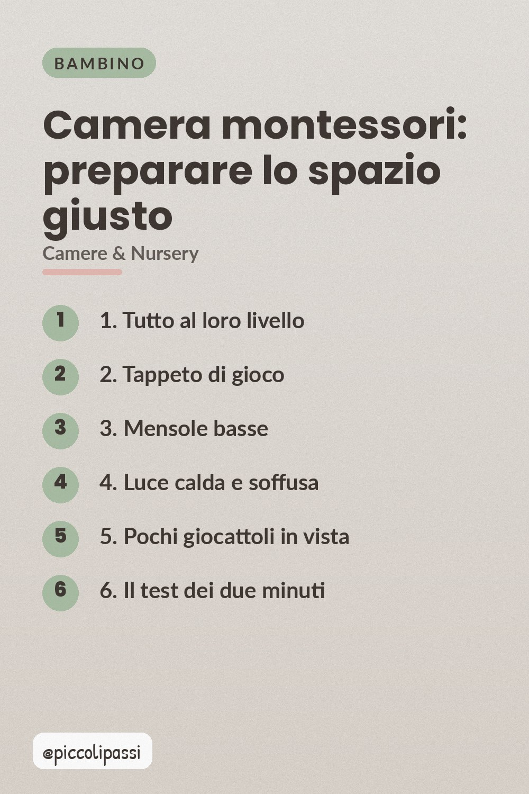
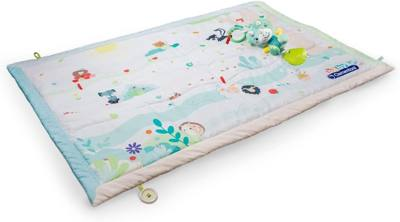
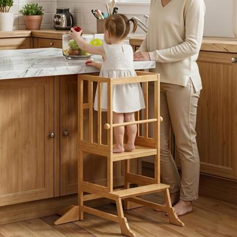

Tutto al loro livello, un tappeto, poche cose in vista: come si prepara la stanza di un bambino piccolo senza spendere niente.

L'ambiente montessori non è un arredamento, è una regola: i bambini piccoli imparano muovendosi, quindi devono poter vedere e raggiungere tutto da soli. Si prepara in un pomeriggio e senza comprare quasi niente.
Riponi ciò che non serve ogni giorno su mensole alte o dentro scatole chiuse. Al livello dei bambini stanno solo le cose che possono usare da soli: il resto semplicemente non è in vista.
Un tappeto imbottito grande metà stanza cambia la percezione della camera: si siede, si sta in ginocchio, si cammina. È il primo oggetto da comprare, prima di qualsiasi mobile.
Due mensole basse, non un mobile: contenitori aperti con i giocattoli divisi per tipo. Il contenitore aperto si riordina da soli, quello chiuso no.
La luce bianca e fredda stanca e tiene sveglio. Lampada calda, luce naturale, niente luce diretta sul letto.
Sei o sette oggetti visibili, gli altri in un cesto con coperchio. Ruotare i giocattoli è ciò che tiene vivo un piccolo ambiente, molto più di una stanza piena.
Entra, guarda, e chiediti: un bambino di due anni può arrivare a tutto quello che vede? Se la risposta è sì, l'ambiente è pronto.

